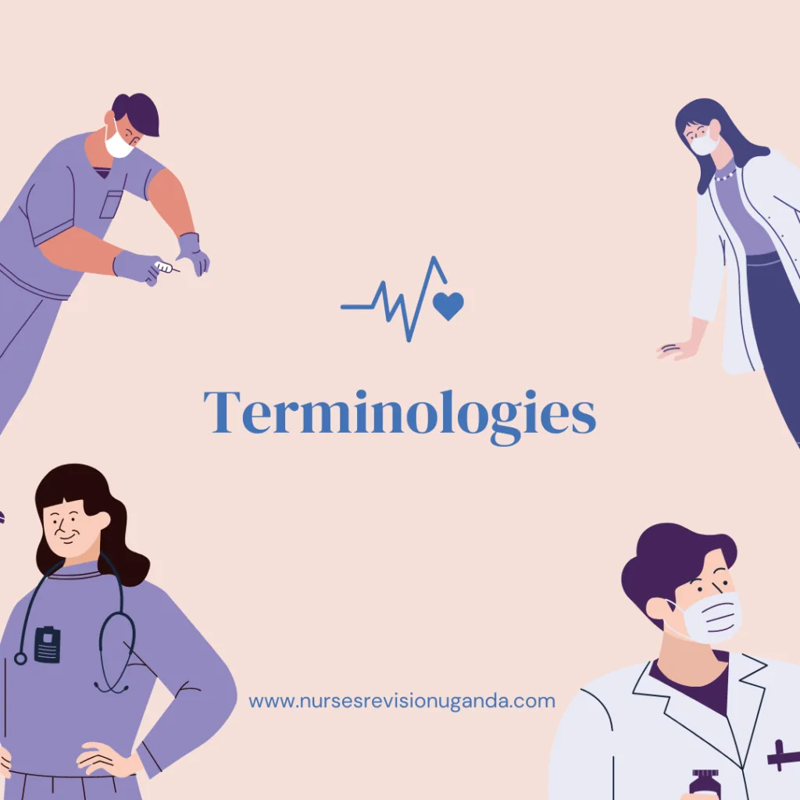

Expanded Nursing Uganda Explanation
Terminologies should be reviewed through safe maternal and newborn assessment, early recognition of danger signs, respectful communication and timely referral. Connect the definition to vital signs, bleeding, fetal or newborn wellbeing, patient education and local protocol requirements.
01 TERMS USED IN MIDWIFERY
Midwifery : It is the profession of providing assistance and medical care to women undergoing labor and childbirth during the antenatal, prenatal, and postnatal periods.
Obstetrics : This is a branch of medicine dealing with pregnancy, labor, and the postpartum period.
Caesarian section : It is an incision made on the uterus through the anterior abdominal wall to remove products of gestation after 28 weeks of gestation.
Cephalic : Refers to the head.
Cervix : It is the neck of the uterus.
Colostrum : This is a fluid found in the breasts from the 16th week of pregnancy up to the 2nd and 3rd day after delivery.
Crowning : This is when the largest transverse diameter of the fetal skull emerges under the subpubic arch and does not recede back between contractions.
Gestation : Pregnancy or the maternal condition of having a developing fetus in the body.
Fetus : Refers to the human conceptus from the 9th week to delivery.
Viability : The capability of the fetus to live outside the womb, usually accepted between 24 and 28 weeks, although survival is rare.
Gravida : A woman who is or has been pregnant, regardless of pregnancy outcome.
Primigravida : A woman pregnant for the first time.
Multigravida : A woman who has been pregnant more than once.
Nullipara : A woman who is not currently pregnant and has never been pregnant.
Parity : The number of children born alive or dead after 28 weeks of gestation.
Vernix caseosa: A greasy substance that covers the baby’s skin at birth.
Meconium : This is the stool of the neonate that is present in the lower bowel at 16 weeks of gestation and is passed within 3 days following birth. It is greenish-black in color.
Lightening : This refers to the descent of the baby into the pelvis, resulting in a drop in fundal height.
Show : The bloody stained mucoid discharge seen at the onset of labor.
02 Additional Midwifery Terms
- Lochia : The vaginal discharge that occurs after childbirth, consisting of blood, mucus, and uterine tissue.
- Antenatal care : Medical care and monitoring provided to pregnant women before childbirth.
- Postpartum : The period following childbirth, typically lasting six weeks, during which the mother’s body undergoes physical and hormonal changes.
- Perineum : The area between the vagina and anus in females, which may stretch or tear during childbirth.
- Amniotic fluid : The fluid surrounding the fetus within the amniotic sac, providing protection and cushioning.
- Placenta : A temporary organ that develops during pregnancy, providing oxygen and nutrients to the fetus and removing waste products.
- Episiotomy : A surgical incision made in the perineum during childbirth to enlarge the vaginal opening and facilitate delivery.
- Postpartum depression : A mood disorder characterized by feelings of sadness, anxiety, and exhaustion experienced by some women after giving birth.
- Lactation : The production and secretion of breast milk.
- Umbilical cord : The flexible cord connecting the fetus to the placenta, through which nutrients and oxygen are transferred.
- Neonate : A newborn baby, typically in the first 28 days after birth.
- Preterm birth : Delivery of a baby before completing 37 weeks of gestation.
- Ectopic pregnancy : A pregnancy that occurs outside the uterus, usually in the fallopian tube.
- Intrauterine growth restriction : A condition in which the fetus fails to grow at the expected rate inside the uterus.
- Preeclampsia : A pregnancy complication characterized by high blood pressure and damage to organs, usually occurring after 20 weeks of gestation.
- Fetal distress : A condition in which the fetus is not receiving adequate oxygen, typically detected through abnormal heart rate patterns.
- Postpartum hemorrhage : Excessive bleeding after childbirth, often caused by the uterus not contracting properly.
- Neonatal intensive care unit (NICU): A specialized medical unit providing care for newborns with serious health conditions or premature babies.
- Midwifery-led care : A model of care in which midwives are the primary providers for pregnant women, providing continuity of care throughout pregnancy, labor, and postpartum.
- Birth plan : A written document created by the pregnant woman outlining her preferences and expectations for labor, delivery, and postpartum care.
- PARA : The number of pregnancies resulting in a viable birth (≥28 weeks gestation), regardless of whether the baby was born alive or stillborn.
- Primipara : A woman who has given birth to one child.
- Multipara: A woman who has given birth to two or more children.
- Grand Multipara : A woman who has given birth to five or more children.
- Pregnancy: The period from conception to the delivery of the baby.
- Antepartum : Before birth.
- Parturition : The process of giving birth.
- Postpartum : After birth.
- Intrapartum Haemorrhage : Bleeding occurring during labor and delivery (e.g., after delivery of the first twin).
- Antepartum Haemorrhage : Bleeding from the genital tract between 28 weeks of gestation and the end of the second stage of labor.
- Postpartum Haemorrhage ( PPH ): Significant blood loss from the genital tract after delivery of the baby and placenta (generally defined as ≥500mL blood loss, or any amount leading to maternal hemodynamic instability). This can occur up to 8 weeks postpartum.
- Labour : The physiological process of expelling the products of conception from the uterus after 28 weeks of gestation.
- Puerperium : The period after childbirth or abortion, lasting approximately 6-8 weeks.
- Lying-In Period : The period immediately following delivery, typically 14 days, during which the mother receives close postpartum care from a midwife or other healthcare professional.
- Perinatal : Relating to the period around birth (typically from 28 weeks gestation to 7 days postpartum).
- Lochia : Vaginal discharge following childbirth or abortion.
- Involution : The natural process by which the uterus returns to its pre-pregnancy size and state.
- Perinatal Mortality Rate: The number of stillbirths and neonatal deaths (within the first week of life) per 1000 total births.
- Mortality Rate: The number of deaths per 1000 individuals in a specified population.
- Neonate : A newborn infant up to 28 days old.
- Neonatal Mortality Rate : The number of deaths of neonates within the first 28 days of life per 1000 live births.
- Infant : A child from birth to one year of age.
- Infant Mortality Rate : The number of infant deaths within the first year of life per 1000 live births.
- Toddler : A child between one and two years of age.
- Abortion : Termination of pregnancy before 28 weeks of gestation.
- Maternal Mortality Rate : The number of maternal deaths attributed to pregnancy, childbirth, or the puerperium per 1000 women of childbearing age.
- Lie : The relationship between the long axis of the fetus and the long axis of the uterus. This can be longitudinal (cephalic or breech), transverse, or oblique.
- Attitude : The relationship of the fetal head and limbs to its trunk. This can be complete flexion, flexion, partial extension, or extension.
- Presentation : The fetal part that enters the maternal pelvis first. Common presentations include cephalic (head), breech (buttocks), face, brow, and shoulder.
- Denominator : The specific part of the fetal presenting part used to describe fetal position (e.g., occiput in cephalic presentation, sacrum in breech).
- Position : The relationship of the denominator to the maternal pelvis (e.g., ROA – right occiput anterior).
- Presenting Part : The portion of the fetal presentation that lies over the internal os of the cervix (e.g., anterior or posterior parietal bone in cephalic presentation).
03 Nursing Uganda Clinical Lens
Use Terminologies as a practical nursing topic, not only a memorized definition. Read the topic through the safety of two patients: the mother and the fetus or newborn.
- What to understand first: define terminologies, identify the normal or expected pattern, then explain what changes when the patient is unwell.
- Why it matters in care: the nurse must recognize risk early, explain findings clearly, document accurately and know when to escalate.
- How to revise it: connect each point to assessment, nursing diagnosis or care problem, intervention, rationale and evaluation.
04 Assessment Guide
- Maternal vital signs, bleeding, pain, contractions, uterine tone and danger signs.
- Fetal or newborn wellbeing, feeding, temperature, breathing and activity.
- History of pregnancy, parity, medications, allergies, investigations and referral risks.
05 Nursing Priorities, Rationales and Outcomes
- Recognize danger signs early and escalate without delay.
- Provide respectful communication, privacy, infection prevention and clear documentation.
- Teach the mother what to monitor at home and when to return urgently.
The rationale for these priorities is patient safety: nursing actions should prevent deterioration, reduce discomfort, support recovery and create clear evidence for the next caregiver.
- Expected outcome: Mother and baby remain stable, danger signs are acted on early, and the family understands follow-up instructions.
06 Patient Teaching and Revision Check
- Explain terminologies in simple language the patient or caregiver can repeat back.
- Teach warning signs, medicine or follow-up instructions, hygiene or lifestyle points where relevant.
- For exams, prepare a short answer using: definition, causes or risk factors, signs, assessment, management, complications and prevention.
- For ward practice, document baseline findings, actions taken, patient response and the plan for review.
Illustrations and Diagrams (11)



3 more diagrams available — open the lesson for full illustrations.
Related Video Lectures
Watch nursing lecture videos on YouTube for this topic. Opens in a new tab.
Watch on YouTubeExternal link: YouTube may use its own cookies and terms. Nursing Uganda is not affiliated with YouTube.